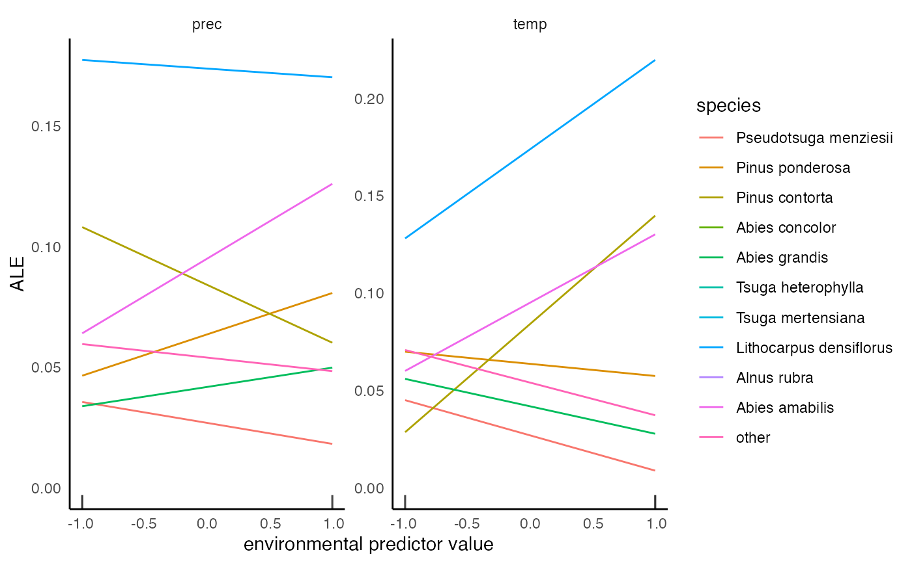
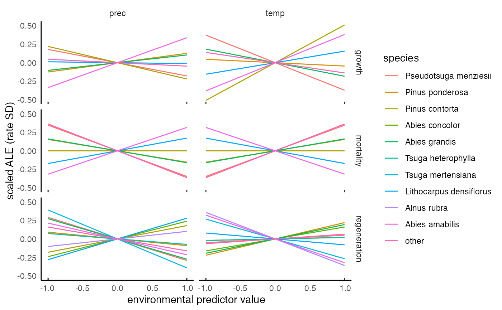

Plots the accumulated local effect (ALE) curves produced by ALE() as a
grid: one row per demographic process (growth, mortality, regeneration) and
one column per environmental predictor. When several species are present,
their curves are overlaid in the same panel as one coloured line each.
Usage
# S3 method for class 'FINNale'
plot(x, process = NULL, scale = FALSE, species_names = NULL, ...)Arguments
- x
an object of class
FINNale(returned byALE()).- process
(
character|NULL)
restrict the plot to one process ("growth","mortality"or"regeneration");NULL(default) plots all three.- scale
(
logical(1))
ifTRUE, divide each curve by the SD of its process x species rate so the effects are dimensionless and comparable (a shared y-axis is then used); ifFALSE(default) the raw ALE is shown with free y-axes.- species_names
Species names for the legend (see
plot.finn_class());NULL(default): the names the model keeps fromfit().- ...
currently ignored.
Examples
library(data.table)
# a small model fitted on two Oregon FIA sites (see ?fit), then its ALE curves
sites <- 1:2
Nsp <- max(fia_obs_dt$species)
init <- makeInitCohorts(fia_init_trees[siteID %in% sites], Nspecies = Nsp)
FINN.seed(1)
m <- finn(N_species = Nsp, recruits_dbh = 12.9,
growth_process = createProcess(~ temp + prec, growth),
mortality_process = createProcess(~ temp + prec, mortality),
regeneration_process = createProcess(~ temp + prec, regeneration_capped))
fit(m, data = fia_obs_dt[siteID %in% sites], env = fia_env_dt[siteID %in% sites],
init_cohort = init, epochs = 1L, patches = 4, patch_size = 0.06,
plot_progress = FALSE)
#> ℹ weights: intercept-only baseline x your vector (dbh=0.00301, ba=8.77, trees=0.852, growth=1.58e+04, mortality=32.4, regeneration=0.677)
#> ℹ share of the objective at the intercept-only baseline (scaled): dbh=17%, ba=17%, trees=17%, growth=17%, mortality=17%, regeneration=17%
ale <- ALE(m, plot = FALSE)
plot(ale, process = "growth")

# all three processes on a common, dimensionless scale
plot(ale, scale = TRUE)
